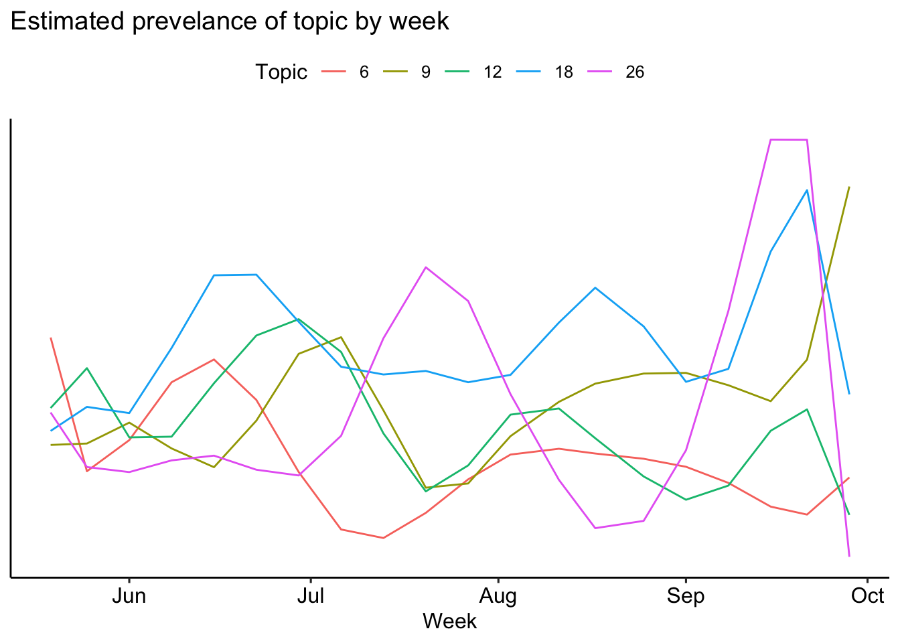
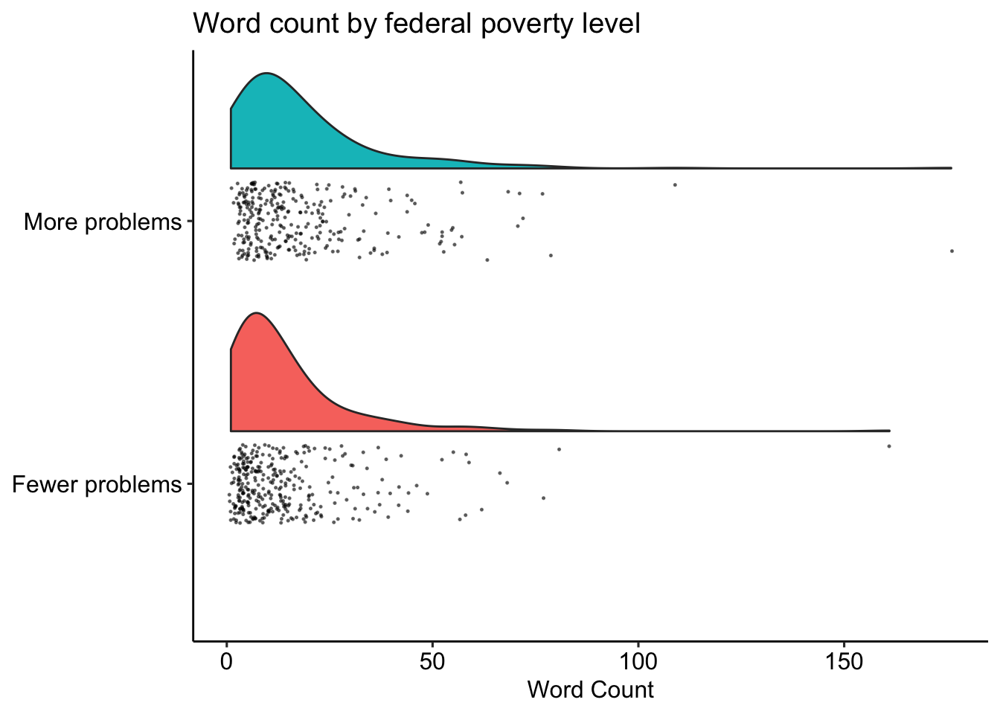

Open-ended childcare responses
Non-parental childcare over time
This week, have you used any non-parental care for your child(ren) under the age of 5?
Response options: Yes, No, Unsure


Challenges
What are the biggest challenges and concerns for you and your family right now?
Word count
Race

Income

Mental health

How many topics

Most common topics

Identify topics
All
1
## Topic 1 Top Words:
## Highest Prob: incom, financi, offic, reduc, think
## FREX: financi, offic, debt, reduc, incom
## Lift: finaci, financi, debt, offic, transport
## Score: financi, finaci, offic, incom, reduc##
## Topic 1:
## Finding childcare/social interaction for 3 year old. Since we have a 13 and 10 year old, as well as a 5 and 3 year old, families are not willing to form pods with us. We're new to the area, so the friends available and wanting to be friends with 13 and 10, are in families who are not being safe. In sum, we're short on friends-social interaction for us and kids.
## Figuring out what to do about childcare when my unemployment runs out.
## reduced income, returning my child to daycare
## Childcare, with daycare closed. Work has been understanding, but that will not continue much longer. Our part-time help will be unavailable from the end of this week until they return to school.
## Financial burden of building debt coupled with taking on full time childcare, causing one parent loss of time to work and generate income2
## Topic 2 Top Words:
## Highest Prob: get, sick, hard, take, leav
## FREX: sick, get, done, hard, groceri
## Lift: workdaycar, emerg, impati, sick, breastfeed
## Score: get, sick, workdaycar, hard, done##
## Topic 2:
## work and daycare
## Working child care schedule
## Finding work and child care
## Not knowing when my husband will be hired back at his job. Not knowing what to do for childcare when my busy season starts for work.
## Figuring out childcare and paying medical expenses. We were using my partner's mother for childcare but my brother in laws haven't been being cautious enough and using masks, handwashing, and social distancing as much as we would like and since they are exposed constantly to my mother in law we have decided to stop using her for childcare right now. We have to be extra cautious as we are expecting our twins to come any time now and we can't risk exposing them. For this same reason, we aren't ready for our daughter to go back to preschool. This pregnancy has included many complications so in addition to medical bills we already had for my partner's surgery a couple years ago and my daughters doctor's appointments over the last couple years, we now have a huge amount of medical bills for this pregnancy. This has caused us to have challenges with managing all the payments and establishing payment plans we can afford.3
## Topic 3 Top Words:
## Highest Prob: babysitt, expos, babi, test, covid
## FREX: babysitt, test, result, expos, medic
## Lift: cold, ppd, patient, rest, result
## Score: babysitt, cold, test, result, diagnos##
## Topic 3:
## Being able to go to the store to buy essentials, like clothing, shoes, groceries. No childcare available at this time, & dear of covid-19 spread within the family.
## My daughter was always on the shy side and sometimes with separation anxiety, a lot of which I attributed to my being a stay at home mom and her always being with me. But since we’ve been completely quarantining for months due to fears of Covid I worry she’ll be socially regressed after this. She’s great with her dad and I but I don’t know how she’ll be with others. Also, it’s been hard to never get a break as a SAHM and hard on our marriage. We used to use a babysitter to go on dates and we miss that.
## Not contracting COVID / not spreading to grandparents who have had to assist with childcare
## Being secluded from older family members, how will the school year look next year, as both my husband and I are teachers and my eldest daughter is to start Kindergarten next year. Also, I have a very young son who will need to start going to a nanny, and I am a little anxious about that change.
## I am unable to support my kids on my own and have to live with my parents because neither of my sons fathers provide any form of support for their kids. I do not receive child support from either of them. My older sons fathers doesn't even want to meet him. it is hard for me to work because I do not have childcare. I don't have a babysitter And basically I would be working just to put my kids in childcare and but there would be nothing left.4
## Topic 4 Top Words:
## Highest Prob: due, covid, hour, risk, exposur
## FREX: exposur, due, risk, hour, center
## Lift: serv, shorten, trace, busier, transit
## Score: transit, due, shorten, hour, week##
## Topic 4:
## distance learning kindergarten, newly immigrated step child and husband, no work visa for my husband held up by USCIS, no childcare when he can get a job eventually, can't afford childcare, many house repairs and expenses, using up all of my savings, very stressful as a nurse working right now
## If I'm un-furloughed it's a high covid risk position plus my daughter's risk at daycare.
## There have been positive COVID cases in the daycare but the daycare isn't very concerned and isn't tracing. Daycare has limited hours and is no longer serving food but the cost has stayed the same.
## I am concerned about finding quality childcare. Many daycare centers are still closed or have limited numbers of children they are taking due to the pandemic. We cannot find our infant a daycare spot and have had to rely on one off baby sitters and family members to watch him.
## Biggest concern is sending two small children to day care where the workers are not practicing physical distancing or wearing masks. Worries about the kids getting sick5
## Topic 5 Top Words:
## Highest Prob: work, home, time, full, parent
## FREX: work, full, home, time, manag
## Lift: oblig, full, work, kids’, home
## Score: home, work, time, full, oblig##
## Topic 5:
## Reopening our small business and finding childcare
## Working and childcare at the same time.
## Managing WFH more than full time while also managing childcare.
## Managing work and home education/child care obligations.
## I can’t work from home so I have had to put my kids in someone’s backyard daycare. Nobody wants that for their kids. My kids want school with ECE teachers6
## Topic 6 Top Words:
## Highest Prob: provid, support, unemploy, isol, parent
## FREX: support, provid, overwhelm, isol, unemploy
## Lift: abus, aunt, support, coordin, provid
## Score: support, abus, provid, isol, unemploy##
## Topic 6:
## Financial instability, mother/grandma who is our biggest support is in poor health and her healthcare is expensive, I have poor mental health and my child’s father has substance abuse issues and does not provide financial or child care support.
## Coordinating childcare between roommates who are out of work and on unemployment and the child's Aunt & Uncle. Providing appropriate social emotional support to my child.
## Balancing full-time work and childcare while my spouse is an essential employee
## One of the biggest challenges I am facing is working from home while still taking care of my child. I do utilize child care occasionally, but I often fear exposing my child to the virus. Especially since cases are so high in Louisiana. I feel a lot of guilt about the situation. I always feel like I’m torn between doing a million things and that I can’t fully dedicate myself to work or being a mother.
## My oldest (8) is severely disabled (autism, nonverbal) and suffering from lack of physical, occupational and speech therapy. I am a stay at home mom working part time gigs from home but now without any childcare other than my hardworking husband. Both he and my daughter are high-risk for covid.
##
## I have severe anxiety (mostly managed through meds) but the pandemic is highly stressful for us all.
##
## Financially Things are perilous since the family business is not faring well during the pandemic (and was hurt badly by the trade war with china last year).
##
## I also worry about the upcoming election and our current president‘S lack of empathy or humility. I don’t think America will survive 4 more years of him.## quartz_off_screen
## 27
## Topic 7 Top Words:
## Highest Prob: school, children, learn, remot, virtual
## FREX: learn, remot, children, virtual, school
## Lift: substanc, remot, learn, virtual, children
## Score: school, learn, substanc, children, remot##
## Topic 7:
## Getting mental health and marriage counseling .
## The health of my mother, who does all childcare is troublesome. She has 2 autoimmune diseases and we are concerned about exposing her
## My oldest son not being able to attend in person classes. He is autistic and needs socialization with his peers. I work full time and will not be able to help him as much with his online classes.
## In our area there is only remote learning. So I'm looking to quit my job . My older children can't help my smaller children during class
## Loss of income due to uncertainty of schools and daycares.
## The uncertainty about child care staying open and my partner's schedule changing.8
## Topic 8 Top Words:
## Highest Prob: care, child, find, afford, health
## FREX: care, find, child, afford, futur
## Lift: reduct, decent, consist, find, care
## Score: care, child, find, reduct, afford##
## Topic 8:
## Economical issues and child care.
## Figuring out how to have safe childcare without exposure
## I temporarily became a stay at home mom but I need to return to work in the fall. I’m concerned about finding child care or that schools and childcare will close again and I won’t be able to work. I have no family to help.
## School! Part in-school, part home.
## Transportation. Adjustment
## 4 yr old starting full-time daycare.
## How to juggle everything.
## Returning to work with child care and finances9
## Topic 9 Top Words:
## Highest Prob: make, money, enough, much, can
## FREX: money, enough, make, adequ, problem
## Lift: corona, adequ, money, deni, enough
## Score: enough, money, corona, make, adequ##
## Topic 9:
## Keep omg up with work while balancing childcare and behavioral issues from them.
## Access to clean water for drinking and washing due to drought, access to fresh food due to lack of grocery stores in my area, lack of childcare, and children returning to school.
## stability of daycare. kid caught what we hope is a stomach virus but may be covid. terrifying. is it safe to be there? what do we do without reliable child care? which one of us quits our job? how long is this going to last? the confusion and instability makes it hard to plan or to ever feel safe.
## We are all doing better since we resumed child care. But we are worried about her teachers getting sick and about likely future closures.
## Money for bills, mortgage payment, daycare, car payment## quartz_off_screen
## 210
## Topic 10 Top Words:
## Highest Prob: childcar, balanc, schedul, job, can
## FREX: balanc, childcar, reliabl, schedul, self-employ
## Lift: self-employ, balanc, childcar, reliabl, immens
## Score: childcar, balanc, self-employ, reliabl, appropri##
## Topic 10:
## No childcare - balancing work & childcare.
## Balancing 2 schedules with childcare
## finding employment and childcare
## Juggling childcare with work.
## Balancing work and childcare11
## Topic 11 Top Words:
## Highest Prob: daycar, back, send, worri, daughter
## FREX: back, daycar, send, want, worri
## Lift: workplac, hardest, thrill, ifwhen, freelanc
## Score: daycar, back, send, workplac, routin##
## Topic 11:
## Routines. Especially bedtime routines. Still a little anxiety as they go back to daycare. Separation anxiety.
## Mental health care and finding childcare
## Scared to send kids back to daycare and scared to go back to the office
## Transition back to daycare with kids wearing masks and following new rules
## our childcare situation changes in september and we can't afford it12
## Topic 12 Top Words:
## Highest Prob: week, time, husband, pandem, now
## FREX: structur, per, contract, independ, campus
## Lift: urgent, averag, handyman, own, preschooldaycar
## Score: preschooldaycar, week, structur, watch, potti##
## Topic 12:
## If I get a new job, is it safe to send the kids back to daycare?
## Where will the children go to childcare in the fall (or when/if I have to return to the office)? How will I keep my sanity working full time from home while watching 3 little ones?
## The biggest challenge is balancing full-time jobs for my husband and I while caring for our children at home. It's hard to be a good parent when I have no down time for myself. I'm trying to figure out what the best and safest child care arrangement could be so that we can get some relief and balance.
## Being isolated and not having any help with our infant. Struggling financially. We have no family in the area to help with childcare so I am unable to work as our 4 month old needs care full time.
## Youngest child’s behavior (has autism and not having structure of preschool/daycare has been very hard for him).## quartz_off_screen
## 213
## Topic 13 Top Words:
## Highest Prob: need, help, kid, social, famili
## FREX: need, meet, help, therapi, develop
## Lift: event, evalu, aris, need, realiz
## Score: need, event, meet, help, social##
## Topic 13:
## Figuring out balancing work and childcare, even with the oldest 2 kids back at preschool. We have not gotten a nanny for the baby because of risk of COVID. Husband is working from home.
## No socialization. I’m an educator and I am concerned about sending my children to childcare and being exposed and the exposure I’ll have being in close contact to teens.
## If keeping my daughter out of daycare is the best thing for her because I worry about her educational and social development.
## Being unemployed and not knowing if I'll be employed at the end of the pandemic. If I need to change careers. What to do for childcare if I do need to change careers. My child has asthma.
## That my son is not learning as much as he would if he was still in childcare.14
## Topic 14 Top Words:
## Highest Prob: year, old, children, month, two
## FREX: year, old, ensur, privat, contact
## Lift: immers, ensur, altern, spanish, workchildcar
## Score: year, old, immers, privat, ensur##
## Topic 14:
## Two parents Working from home without childcare
## Working from home without childcare
## childcare and working; children socialization
## Getting childcare since school.isnt gking back.
## Expecting a second child in 6 weeks and fearful of having family visit, watch our oldest. Would it be safe to go back to daycare? Who can we really trust with our children as restrictions are loosening and everyone has decided what their own personal definition of "safe" is. Delivering the baby alone if we can't trust anyone to be there for us safely15
## Topic 15 Top Words:
## Highest Prob: hous, move, nanni, parent, also
## FREX: move, hous, nanni, prepar, loan
## Lift: loan, move, mandatori, divorc, prepar
## Score: loan, move, divorc, hous, nanni##
## Topic 15:
## Looking ahead to the coming school year and balancing work, school and child care adequately.
## Balancing childcare (or lack of) and work expectations
## Safe childcare if I can no longer work remotely. Childcare so that I can access physical therapy. Burnout from parenting while working remotely.
## On leave of absence from work due to being pregnant and day care being too risky. Lack of support from some family who aren't willing to follow our requests in order to feel safe visiting.
## socialization for the baby and affording in home child care16
## Topic 16 Top Words:
## Highest Prob: sinc, financ, week, employ, time
## FREX: financ, begin, util, search, sinc
## Lift: tax, risen, file, search, director
## Score: tax, financ, search, employ, march##
## Topic 16:
## Our daughter just started preschool again 2 weeks ago after being at home for six months during Pandemic... Unfortunately she was just dismissed because she wasn't behaving properly. They gave her 4 days to adjust and now we have no childcare available. It is extremely frustrating when adults don't understand the children need time to adjust.
## I was recalled from my job from being on furlough since March. I work in a child care facility and when we closed in March, I was paid by the director until June. I then was furloughed in July and was recalled to my position on 8/29. However, I was only working part time (3 days) when put on furlough and I was recalled to work 5 days. I was unable to do so since I only have child care 3 days a week from my mother. So I had to quit my job. I have been searching for a part time job (working 3 days) since quitting my job. I have been waiting for a decision to be made by unemployment since the beginning of the month to see if I still qualify for unemployment benefits. So essentially, I have had no income for 3 weeks and we have been relying on our savings which are draining. So finances are a challenge and me finding new work is stressful since I can only
## work 3 days due to child care. Additionally, my very active 3.5 year old was pulled from school in March and we are trying to get him enrolled in a local preschool to help him have some routine, peer socialization & time being active outside of the home.
## Being unemployed as a teacher is scary. I need to choose between providing for my family and my safety and to top it off daycare is only allowing 2 days for part time students. My mother in law will need to watch him 3 days now instead of 2 and she lives far and her health is in question. I struggle with deciding whether I should look for a permanent position (my lay off was based on a budget deficit) or take subbing and more likely expose myself to COVID but work fewer days to provide childcare for my son.
## No longer having help from family with childcare.
## The kids understand the virus but are frustrated that they can no longer do many of the things they once enjoyed doing.
## Should I get a job if we don't have a childcare plan?17
## Topic 17 Top Words:
## Highest Prob: abl, feel, mean, husband, babi
## FREX: abl, mean, hold, near, feel
## Lift: daycareschool, court, unless, caretak, intend
## Score: abl, daycareschool, hold, care, husband##
## Topic 17:
## Unable to visit family and friends as planned because they are outside the USA.
## Worried our son is missing out in socializing with other children and participating in playgroups.
## My husband was laid off, but within 24 hours his employer offered him another position. He received a 50% pay cut. I am a stay at home mom as our son has a chronic medical condition. The goal is that his employer will be able to give him his old position back, but sales outcast is not looking good. I will more than likely need to get a job to supplement our income, but we can't put our son in daycare due to him being high risk for serious complications from Covid-19.
## My husband and I trying to balance two full-time jobs (working from home), all the household tasks of cooking and cleaning, working in time to facetime with our families who live far away, and giving our baby quality attention all day everyday (even when the nanny is here, she's in our small apartment and we get pulled in to things)
## Baby is scared of everyone except my husband and I, so getting help with child care is nearly impossible. My parents are able to come help off and on as they live a couple hours away, but our daughter screams whenever anyone else tries to come near her / hold her.
## Whether to buy car and have more reliable transportation or keep my I saved for car and hold on to it for the rest of 2020 and 2021 in case I don't find better employment than my last job or no employment for the test if the year due to the kids e learning and no childcare for my son under 5.18
## Topic 18 Top Words:
## Highest Prob: pay, bill, food, cost, expens
## FREX: bill, pay, food, expens, cost
## Lift: fund, oper, item, workno, higher
## Score: fund, pay, bill, food, expens##
## Topic 18:
## affordable childcare. We are paying for a nanny which we can barely afford AND we are trying to negotiate with our daycare provider not to give away our spot because once the pandemic is over spots for daycare are going to be a mad scramble. So we will probably end up paying THEM as well to keep our spot.
## Figuring out who will watch the kids after daycare closes. What we are having for meals.
## My husband is looking for a job. And we're worried about childcare once he finds one.
## child care and food cost. I work in a clinic as a senior medical assistant. I am up at 4am with my children to get them to my mothers house for daycare because i cant not afford to pay for child care for my two kids. I try to pay my mom every two weeks between 100-200 dollars because that is all i can afford to her. I am very grateful that she helps me. Even though she doesnt offer me to pay i still insist because caring for someone's child is hard work.
## Lack of childcare. Lack of money to pay for childcare and resources we need for mental health.## quartz_off_screen
## 219
## Topic 19 Top Words:
## Highest Prob: social, friend, famili, see, day
## FREX: friend, play, group, visit, miss
## Lift: mommi, playgroup, recogn, energet, hasn’t
## Score: playgroup, friend, group, miss, toddler##
## Topic 19:
## We had a very active social life pre-pandemic and have not socialized with anyone with March 11th. Our weeks were busy and fun, filled with preschool, play dates, playgrounds, gymnastics class, family visits, and now my daughter is missing her friends and teachers terribly. I am struggling with my own loneliness and fear. Although they weren’t very close, my husbands grandmother just passed away in a nursing home from Covid-19, and it has made us very apprehensive about visiting either of our parents. We wish we had answers about when the world might look more like it did before.
## I'm concerned about loneliness and feeling disconnected. My biggest concern is about my daughters. The three year old goes to prek3, but they're not allowed to sit next to each other or play together. She misses her friends a lot and is always desperate to play with other children when we go to the park. Every day she asks to play with a friend or to go to the playground to see if she can find any friends. It breaks my heart. Before she started prek3 in September, we'd spent the full 6 mo that in isolation. She had started getting depressed. My sweet 3 year old was depressed. She said things like "my tummy hurts", and she wasn't sick or hungry or injured. She would spend part of her nap time yelling out her bedroom window "animals come! My name is xyz. Animals come!" Because she wanted animal friends. One night she started singing "we're sad, we're sad, family is sad, because we're trapped, we're trapped, in the house ". She would get sad when we talked to her grandparents on the tablet, pointing out that they were not here. The first 4 mos of the pandemic were so hard. Now for my 7 mo th old I worry about her socialization. And having friends -- how is she going to make friends?? She is at home with us, not daycare. When should we start setting up aydates for her? Should we? Can we?? What are the first 2 years of her life going to be with this isolation?????
## My mom, who has been helping with childcare and household support is leaving today. I don’t have a plan for what’s next.
## Ensuring interactions with other children when we are not enrolled in daycare or Spanish immersion.
## Social development while we're isolated from friends & playgroups.20
## Topic 20 Top Words:
## Highest Prob: lack, social, stress, access, home
## FREX: lack, access, space, clean, live
## Lift: necess, outdoor, sport, fresh, internet
## Score: lack, outdoor, govern, product, live##
## Topic 20:
## Never getting a break from childcare and feeling burnt out as parents, the small size of our living space (720 sq ft rental) and long periods trapped inside together because of poor air quality due to smoke from wildfires, poor mental health because of lack of exercise and time outside
## Adjusting to life with two newborns and our older daughter. We are trying to balance caring for all three children and focusing on some of the educational pieces our older daughter is missing out on since we aren’t sending her to daycare/preschool.
## the amount of time we (the parents) are needed at work has increased, while the time that our daycare is open has decreased. Our family lives long distance and we get to see them even less now. I'm struggling to keep my kids entertained since we aren't leaving the house much on days off.
## Not having childcare outside the home, budgeting our current income for necessities and upcoming holidays, not being able to shop together to make decisions
## Finding childcare for September that is flexible if school doesn’t go back.21
## Topic 21 Top Words:
## Highest Prob: job, son, husband, new, lose
## FREX: lose, job, son, secur, anoth
## Lift: subsid, encourag, muscl, tone, love
## Score: son, job, subsid, new, watch##
## Topic 21:
## mental health and childcare
## We have a 3 month old baby and are both currently on parental leave but that will come to an end and we have to make decisions about putting our young baby in child care, what child care, and when which is difficult with so much uncertainty around COVID and fear of exposure. We are fortunate to have option to have family help provide care but are concerned about our child’s social and other development because he will not be interacting with anyone besides my husband and me and potentially one other family member. We may also have the option for one or both of us to reduce hours at work but that would mean reduction in family income.
## Job security going forward. Our child’s experiences when daycare reopens.
## My 4.5 year old was exposed to COVID at his school (he's in a summer program) by a teacher. The school handled it really well and we got his test results back today (negative, yay!). But my husband and I have been home with both kids all week waiting on the test results. Now, we'll keep staying home until the school reopens his classroom. The baby (6 months) will go back to the nanny we share with another family, so I'll be able to work from home and get more done without the baby here.
## Health, food, bills, education, child care22
## Topic 22 Top Words:
## Highest Prob: challeng, biggest, now, right, grandpar
## FREX: challeng, biggest, decreas, grandpar, right
## Lift: economi, accustom, ongo, housekeep, challeng
## Score: economi, challeng, biggest, decreas, right##
## Topic 22:
## Biggest concern is that someone in my immediate family or parents will have a severe case of Covid-19, which may lead to disability or death. I feel that based on research, my children would recover well, but it is uncertain with myself, my spouse and my children's grandparents who also provide childcare.
##
## A great challenge is homeschooling my daughter who is in Kindergarten, while also maintaining my job.
##
## A source of uncertainty and anxiety is job security due to the economy is in a recession and companies are having layoffs left and right.
##
## Loneliness is another challenge, as quarantining makes us feel less connected with others.
## My spouse maintaining their job and their full time status. They work in childcare and their school's finances are not great - lots of families have left and they were closed for several months.
## Transportation, job, childcare
## I’m worried about my mom leaving after spending several weeks with us, and how we will navigate childcare.
## We found a childcare. So now biggest concern is staying healthy and keeping my son healthy23
## Topic 23 Top Words:
## Highest Prob: plan, fall, next, school, safeti
## FREX: next, plan, safeti, fall, happen
## Lift: long-term, stretch, outcom, unknown, announc
## Score: next, long-term, plan, fall, safeti##
## Topic 23:
## We are both professors and planning for the fall with childcare and unknown cuts and unsure plans... that's really stressful
## Our daughter has attended half day “camp” at daycare for the past week, but will be transitioning back to her regular full day preschool hours next week. I am anxious about how she will adapt to the transition after being home with me for so long. (I am a teacher and I taught from home from March until June and then had the whole summer with her too)
## Unsure of what childcare will be when I return to work full time
## Figuring out daycare and whether I’ll be sending my child to school in the fall
## Getting work done without our son’s daycare being open. And I worry that he is lonely without other kids around.24
## Topic 24 Top Words:
## Highest Prob: will, school, know, start, like
## FREX: will, know, teacher, kindergarten, look
## Lift: meal, unpaid, will, know, kindergarten
## Score: will, start, meal, know, school##
## Topic 24:
## Balancing full time care of our daughter with 40+ hr/week jobs while working from home. Planning for and worrying about required travel for my husband. Will he be exposed? How will I manage while he's gone without childcare? How will we manage if he comes home and gets sick? How will he quarantine from us and how will I be the caretaker of him and my daughter while still holding down the responsibilities of a demanding job?
## Trying to figure out if it’s safe to send kids back to school and daycare, and trying to get any work done while taking care of 3 kids at home.
## Balancing childcare and 2 full time jobs
## Not getting sick at work/daycare
## Juggling childcare concerns and work responsibilities while being at home.25
## Topic 25 Top Words:
## Highest Prob: safe, tri, keep, stay, figur
## FREX: safe, figur, keep, healthi, tri
## Lift: determin, view, safe, remain, healthi
## Score: maintain, safe, determin, tri, figur##
## Topic 25:
## Finances, tax liabilities, childcare, healthcare
## my daughter and i are sick and we were tested for corona virus today, waiting for result and trying to decide what to do with my younger daughter who just started back to daycare yesterday
## we are currently in 14 day quarantine for potential exposure which has changed how we managed to function during the quarantine, mom and dad work full time from home while watching 2 kids 5 and under, daycare is back open but i dont feel comfortable sending my children, school will start virtually next month for my 5 year old and we have to decide what to do with the 2 year old, risk sending them back or risk them falling behind socially, emotionally, and being entertained by an ipad all day, normally during COVID we had help from grandparents but not this week or next week
## Balancing our work schedules with childcare and family life
## Managing full time work and caring for an infant with no child care26
## Topic 26 Top Words:
## Highest Prob: stress, high, job, now, new
## FREX: bad, high, suffer, level, relationship
## Lift: fail, news, bad, season, five
## Score: bad, high, suffer, level, five##
## Topic 26:
## Childcare. I’m scheduled to start a new job next month, a faculty position. I only have a babysitter 3 days per week. My mother-in-law isn’t available 5 days per week. The college plans to open in-person and my department has said it’s “all hands on deck” due to smaller class sizes and needed to give students personalized attention. I’m going to need to be on campus a lot. I’m hoping my grandparents will watch my daughter two days per week, as they did pre-covid, but at the same time it feels super risky due to their age and health histories and me being around groups of people
## On campus.
## I have found a daycare provider now but I’m worried that my son will be exposed to the virus there
## So much worry and stress. No backup child care. Unable to attend if she has a minor symptom. Worried about heading into cold and flu season. Just worried about sustaining this level of stress.
## Right now the biggest challenge is navigating virtual learning with 3 sons and a 3 year old. Our district has had to cancel school all week due to smoke. The moke makes them unable to open classrooms and pump in fresh air to mitigate the spread of covid. I am having a hard time getting my work done.
## Isolation/boredom from pandemic combined with extreme temperatures (we are in Phoenix). We literally can’t leave our house and it’s awful! Anxiety about childcare possibly closing, increased exposure to covid if local schools reopen and school children are also in our childcare center.## quartz_off_screen
## 227
## Topic 27 Top Words:
## Highest Prob: return, son, unabl, work, uncertainti
## FREX: return, unabl, august, resum, symptom
## Lift: pre, vehicl, schoolchildcar, temporarili, return
## Score: return, vehicl, unabl, son, august##
## Topic 27:
## Unable to focus on either work or childcare properly, making a decision around resuming childcare, difficulty making work deadlines
## Lack of socialization for my kids, lack of “getting a break” for myself, inability to increase work hours for myself and inability to start DNP program due to lack of child care/homeschooling and general support.
## Other then finding a place to rent is almost impossible the high rent makes it almost untouchable also to have 3x rent or to even make that a specially with only 2 small child care places and one 1 being state approved also there is a packed waiting list.
## I am unable to return to work because there is no good option for childcare and we do not have a vehicle
## My job may be at risk, with sweeping layoffs coming. Even if I am lucky to maintain a position at my company, it would be smart to begin the search for a new role elsewhere. But looking for a job and potentially starting a new job while I am facing less than ideal childcare issues seems like such a hurdle.28
## Topic 28 Top Words:
## Highest Prob: class, want, onlin, distanc, kid
## FREX: class, onlin, engag, physic, homeschool
## Lift: absolut, chosen, nobodi, opt, retir
## Score: class, absolut, onlin, homeschool, miss##
## Topic 28:
## I can't work because there is no way we could afford childcare for 3 children
##
## Balancing school/child care needs while working full time
## Distance learning and paying more for daycare
## We’re both teachers in Texas and we’re opening schools face-to-face in two weeks with COVID cases still rising. We have no choice but to show up because neither one of us can afford to quit and we therefore have to send our daughter to day care.
## School. My son has autism and needs therapy and to be in school. I'm fearful of him getting coronavirus. I'm scared school will shut down and I will lose my future job because of not having childcare.29
## Topic 29 Top Words:
## Highest Prob: can, well, juggl, kid, peopl
## FREX: juggl, potenti, partner, well, elementari
## Lift: surg, restart, elementari, hesit, juggl
## Score: surg, juggl, can, elementari, potenti##
## Topic 29:
## Im a single mom of a child who was born at 24w. He is 4 and caught up physically but behind developmentally and i fear him not having the classroom and students teachers to really help he will fall further behind. I also cant go find side work to pay bills because ivan is home.
## Going back to work after maternity leave, risk of contracting coronavirus at my job. Loss of childcare due to provider needing surgery.
## Steady childcare
## Biggest challenge is getting my work done while caring for the kids. A huge concern I have is that I dont have the time or knowledge to provide my kids with the attention and teaching for their emotional and intellectual development and learning. Before the pandemic they would go to a child care center and we were confident they were receiving the teaching they needed. Now we ignore them while we work.
## I have not been able to find a new job due to the pandemic, and if I do, childcare for our baby is a concern. Also concerned about baby not having enough social interaction.30
## Topic 30 Top Words:
## Highest Prob: child, also, one, kid, day
## FREX: child, one, also, kid, least
## Lift: least, one, also, child, kid
## Score: child, least, one, also, kid##
## Topic 30:
## We are trying to expand my child care program to help meet the child care needs of the community, but that is stressful and expensive.
## Navigating online pre-school for my 4 year old. I don’t want her to miss a year of learning but it’s hard to keep her engaged and focused on a zoom class meeting.
## Exposure to the virus. We are worried about my baby as well as my mom who is her babysitter. My mom is imunocompromised.
## Also worried some about my mental health with never getting out or seeing anyone, as it’s starting to take a toll.
## Making decisions trying to do the best for the community (put child back in childcare, preschool etc knowing that could be risking others he comes into contact with).
## Also I was job searching for a full time job and almost all jobs I was applying for are now gone or frozen
## Lack of one of our incomes and getting my child back in daycare due to limited numbers allowed when they openClusters

## ICLUST (Item Cluster Analysis)
## Call: iclust(r.mat = topics_only_wide)
##
## Purified Alpha:
## C24 C26 C13 C25
## 0.59 0.38 0.21 0.13
##
## G6* reliability:
## C24 C26 C13 C25
## 0.625 0.402 0.154 -0.074
##
## Original Beta:
## C24 C13 C26 C25
## 0.241 0.194 0.080 0.067
##
## Cluster size:
## C24 C26 C13 C25
## 10 11 4 5
##
## Item by Cluster Structure matrix:
## O P C24 C13 C26 C25
## Topic1 C24 C24 0.33 -0.06 -0.07 -0.10
## Topic10 C24 C24 0.80 -0.38 0.03 -0.26
## Topic11 C13 C13 -0.03 0.39 0.05 0.25
## Topic12 C24 C24 -0.14 -0.07 0.02 -0.01
## Topic13 C25 C25 0.00 -0.06 0.02 -0.22
## Topic14 C24 C26 -0.16 0.08 0.19 0.11
## Topic15 C26 C13 -0.05 -0.06 0.03 0.04
## Topic16 C24 C26 -0.06 -0.04 -0.07 0.02
## Topic17 C25 C25 -0.07 -0.02 -0.05 -0.09
## Topic18 C26 C26 0.01 -0.03 -0.24 -0.01
## Topic19 C24 C24 -0.19 -0.11 0.02 -0.04
## Topic2 C26 C26 -0.04 0.12 -0.14 0.09
## Topic20 C13 C13 0.01 -0.22 -0.05 0.00
## Topic21 C26 C26 -0.11 0.11 -0.17 0.03
## Topic22 C26 C24 -0.07 0.05 -0.07 -0.03
## Topic23 C26 C26 0.01 0.05 0.21 0.09
## Topic24 C26 C26 -0.12 0.20 0.36 0.20
## Topic25 C24 C24 0.22 0.20 0.06 0.13
## Topic26 C25 C25 -0.08 -0.01 0.00 0.11
## Topic27 C26 C26 0.09 0.02 0.10 0.02
## Topic28 C26 C26 -0.13 -0.03 0.25 0.00
## Topic29 C25 C25 0.01 0.02 0.11 0.17
## Topic3 C24 C24 -0.17 0.03 -0.08 0.14
## Topic30 C24 C24 0.70 0.20 0.12 -0.33
## Topic4 C13 C13 -0.08 0.22 -0.04 0.04
## Topic5 C24 C24 0.51 -0.11 0.09 0.22
## Topic6 C24 C25 0.14 -0.13 -0.06 -0.20
## Topic7 C26 C26 0.15 -0.09 0.49 0.25
## Topic8 C24 C24 0.47 -0.30 -0.14 -0.19
## Topic9 C26 C26 0.01 -0.06 -0.24 -0.06
##
## With eigenvalues of:
## C24 C13 C26 C25
## 1.98 0.69 0.77 0.61
##
## Purified scale intercorrelations
## reliabilities on diagonal
## correlations corrected for attenuation above diagonal:
## C24 C26 C13 C25
## C24 0.59 0.03 -0.09 -0.15
## C26 0.01 0.38 0.05 0.22
## C13 -0.03 0.01 0.21 0.24
## C25 -0.04 0.05 0.04 0.13
##
## Cluster fit = 0.23 Pattern fit = 0.94 RMSR = 0.05Effects
Mental health
All
By race
By income
Race by Mental Health

Poverty by Mental Health

Over time

Question 2
Word count
Race

Income

Mental health

How many topics

Most common topics

Identify topics
All
1
## Topic 1 Top Words:
## Highest Prob: time, support, provid, live, close
## FREX: live, support, relat, cost, provid
## Lift: live, high-qual, lockdown, relat, team
## Score: provid, support, time, lockdown, live##
## Topic 1:
## Part time childcare
## Part time childcare
## having my parents near by for childcare and support
## Part time childcare
## Support from family for childcare2
## Topic 2 Top Words:
## Highest Prob: famili, abl, avail, good, reopen
## FREX: avail, abl, re-open, famili, mask
## Lift: mask, quarantin, re-open, avail, abl
## Score: famili, re-open, abl, avail, good##
## Topic 2:
## Food stamps, having employment, and reliable daycare
## Family providing free childcare
## that my 15 year old is helping with childcare
## Having a nanny for the time being
## Outdoors, babysitter.3
## Topic 3 Top Words:
## Highest Prob: day, week, job, babysitt, friend
## FREX: job, day, babysitt, access, communiti
## Lift: job, communiti, guess, qualiti, expens
## Score: babysitt, communiti, job, day, friend##
## Topic 3:
## Each other, childcare, talking (virtually) to friends and family. Knowing we're financially secure. Knowing quality health care is accessible.
## Having a babysitter watch shortly during the day as I run errands
## We have an amazing babysitter who has been gracious enough to watch our daughter an extra day each week while day care is closed
## having childcare for 2 days a week and FMLA and covid leave from the CARES Act
## Splitting the cost of childcare with another family we know and having a friend watch the kids in the mornings during the week.## quartz_off_screen
## 24
## Topic 4 Top Words:
## Highest Prob: child, still, mother, member, hour
## FREX: mother, still, member, child, hope
## Lift: extrem, sister, system, sever, includ
## Score: child, extrem, mother, still, member##
## Topic 4:
## The preschool/childcare for my oldest child just had a limited re-opening today with an extremely small number of kids and limited (less) hours. We hope that this will continue. The childcare place for my youngest also re-opened fully, just with special protocols.
## My family support system of grandmothers, sister and spouse have been a huge help, especially with child care.
## We have childcare again, though the hours are limited compared to their regular hours.
## That I am still able to nanny. I will be having to take several weeks off of that when our 2nd baby is born in August though. We also have a really good family / friends support system, which has been a huge lifesaver.
## My live in mother for child care5
## Topic 5 Top Words:
## Highest Prob: open, employ, allow, flexibl, schedul
## FREX: open, flexibl, stabl, part-tim, normal
## Lift: normal, open, appoint, art, danc
## Score: open, employ, lifesav, flexibl, normal##
## Topic 5:
## Online classes (art)
## FaceTime play dates
## Telemedicine appointments
## Grocery delivery services
## Zoom with the preschool class, art projects, dance parties, Daniel tiger and cheetohs.
## Public schools being open for in person classes. Like prek and early headstart
## Educational offerings online from Youtube kids, Amazon Prime, our JCC daycare center and various museums and performing art institutions around the world.
## Honestly. ....youtube. it is a great source for projects to do with the kids, or as a babysitter sometimes!6
## Topic 6 Top Words:
## Highest Prob: care, child, take, continu, get
## FREX: care, continu, option, take, babi
## Lift: cheap, larg, necess, slowli, licens
## Score: care, cheap, child, continu, babi##
## Topic 6:
## We were approved for SNAPS benefits. It isn't much, but it helps. Also, because of the day care issue, my children's grandparents have been keeping the kids while we are at work, but, it is getting difficult for them to continue watching the kids because their grandmother has a degenerative eye disease that is slowly but surely taking away her abilitly to see. She is slowly going blind and its getting harder for her to care for my kids.
## Not having to pay for child care so I can stay home and watch baby.
## Some access to child care
## What is hoping me and my children the most right now is family members but that includes just my aunt and uncle and their children they have been my child care and my best support and paying my monthly rent
## Having work and child care to get out of the house7
## Topic 7 Top Words:
## Highest Prob: pay, incom, kid, now, also
## FREX: pay, worker, essenti, assist, money
## Lift: bill, card, client, creativ, credit
## Score: one, pay, essenti, worker, bill##
## Topic 7:
## Having one parent home to act as the guardian of our social emotional health, and also so we don’t have to expose our kids to other kids’ potential germs at daycare, is the most helpful thing right now. My husband is an essential worker and we do have income, thank goodness, but the government assistance for the pandemic is also incredibly helpful.
## Our income has stayed the same so far so at least we aren't stressed about money right now (especially with paying less for child care since the kids are mostly home with us).
## We are thankful to have found the kids a nanny for half of the week. That person has been quite uplifting, and she is great at making sure the kids get out and move their bodies in safe places.
## That our daycare center has not closed. If they closed I would have to quit my job to stay home and we would not make enough money on one income to pay bills
## Ability for me to work from home and taking care of my kids at the same time. This has allowed me to save up on commuting and childcare cost, therefore enabled me to pay down debt and better financially. Also, I feel more at ease and stress reduce as I don’t have obligation to head to office for work and leave my kids with a sitter.## quartz_off_screen
## 28
## Topic 8 Top Words:
## Highest Prob: social, see, kid, class, also
## FREX: distanc, neighbor, nice, visit, attend
## Lift: neighbor, nice, visit, adult, age
## Score: playgroup, social, see, class, connect##
## Topic 8:
## We decided to create a COVID bubble with our next door neighbors, who also work from home and take the same precautions we do regarding social distancing. We spend time with them and let our kids, who are classmates, play together. Both kids are only children, so having another kid to play with after 3 months of isolation has been wonderful for them, and for the adults too.
## Is “my mom” an appropriate answer? I really don’t know. This is very isolating. Since my daughter goes to daycare, she could be carrying the virus and I am scared to be around family members because I do not want to unknowingly pass the virus to people I love (or anyone). I’d love for this to end.
## Video chats with family members. Social distance visits in yard with sister/daughter. Online learning resources. Walmart pick-up and Amazon delivery. Partial unemployment I'm receiving as I stopped working as a COVID-19 precaution to protect my family (also lacked childcare).
## Daycare has been of great help for us with our youngest. That took off a greater burden while we're at home working. We've been having social distancing playdates and seeing family over video calls or in front/back yards with social distancing parameters. We take weekly weekend bike rides as a family and go swimming every weekend, if not during the week. I've been having bimonthly video calls with my closest girlfriends. I practice daily reiki and meditation. Our daughters love their yoga and my oldest loves her meditation class she takes twice a week. Giving our girls screen time (not being so strict) has been helpful for the most part (until we have to turn the TV off or remove the tablet). Getting more 1:1 time with my husband has been really nice. Me cooking from home more and having dinner together at a more reasonable hour to put the girls to bed at an earlier bedtime has been very helpful.
## Having a steady income and socially distanced contact with our next door neighbors, whose son is also in my daughter's class at school. The kids have exchanged letters and toys, and we have cooked meals for each other and left them on the doorstep. It's been a nice way to stay connected.## quartz_off_screen
## 29
## Topic 9 Top Words:
## Highest Prob: help, parent, grandpar, food, stay
## FREX: parent, help, stamp, give, that
## Lift: church, felt, immens, instead, medicaid
## Score: help, grandpar, parent, instead, food##
## Topic 9:
## The extra 600 has helped me add to the funds I saved for a used car. I could buy a 13,000 car cash if I wanted to but now more concerned with Bill's in the future I can't work due to no childcare and e learning. Have snap helps me stock up on foods as prices increase and meat is scarce or limited. Free lunch from schools they give for the week helps me feed my kids a portion controlled meal 3 times a day and helps me save money by not spending it on fast food, etc. No disconnect on light bill let's me pay on the lights when I am financially able to pay it instead of paying lump sum when I am late on payment. I keep balance under $225. Medicaid allows me to go to Doctors care when I am really concerned about me or my children's health but afraid to go to regular doctors office that's crowded especially pediatric offices. I can sign in online and wait in car until called.
## My parents help with childcare and that helps immensely
## food stamps, my parents with childcare
## Free food programs through daughters school and produce distribution through local churches. Extended Family helping with childcare
## My parents stayed with us for 3 weeks and helped with childcare and all sorts of cleaning and projects around the house.10
## Topic 10 Top Words:
## Highest Prob: daycar, back, son, get, send
## FREX: son, daycar, back, old, keep
## Lift: attent, happier, hes, high, luckili
## Score: daycar, back, send, son, old##
## Topic 10:
## Getting back into our regular routine with my daughter being at school and son being at daycare.
## Trying to empathize more with my child. We are super stressed as parents, but I understand my son isn’t getting the typical student/teacher interaction and learning they usually get while in childcare. So I understand why there are more tantrums and I try to keep my son happy and engaged as much as humanly possible.
## Sending our children back to daycare. They are much happier with the attention, care, and interaction that they were not getting from us.
## Having the daycare for my older son still. It’s hard because they can’t be in school.
## putting our son back in daycare11
## Topic 11 Top Words:
## Highest Prob: childcar, free, nanni, part, understand
## FREX: part, childcar, free, mother--law, nanni
## Lift: communic, final, part, mother--law, doesn’t
## Score: childcar, part, free, nanni, understand##
## Topic 11:
## Creating a schedule. Communicating daily in the morning to understand our work/childcare needs throughout the day.
## Finally having some part time childcare (an in-home babysitter)
## Grandparents providing free childcare
## Grandparents providing free childcare
## Access to grandparent to help with childcare. Understanding coworkers and bosses.12
## Topic 12 Top Words:
## Highest Prob: work, home, can, husband, fact
## FREX: work, full, fact, husband, household
## Lift: household, easier, entir, major, paycheck
## Score: work, home, mom, can, husband##
## Topic 12:
## Working from home! Since our childcare plans either got too dangerous or fell through because of covid, it's been great that my work can be done entirely from home and my husband has been able to be home a few afternoons a week so I can focus on work.
## The fact that my husband has remained steadily employed and that I was already a stay at home mom so we aren’t scrambling for childcare. It’s nerve racking for my husband to leave each day and potentially be exposed but having a steady paycheck is a godsend.
## My mom moved in with us to support our childcare needs and has helped maintain our household while my husband and I work full time. It has been a great set up for myself, husband, her and my toddler.
## I’m off for the summer & we have a childcare/schooling plan to start the year regardless of my work scenario. My husband is currently working from home.
## That I'm able to work from home to keep my family safe and that my mom lives with me and helps with childcare so that I can actually work.## quartz_off_screen
## 213
## Topic 13 Top Words:
## Highest Prob: need, dont, will, center, worri
## FREX: consist, worri, dont, afford, come
## Lift: afford, camp, clear, fortun, oper
## Score: toddler’, need, center, dont, consist##
## Topic 13:
## My spouse just found full-time employment, so we needed to find additional childcare. We were lucky to find someone who can come to my spouse's home and look after the kids there while my spouse works remotely. Our kids are taking quite well to the childcare provider, and that has been a morale booster for our family.
## Ourselves - we're doing our best to manage the situation. But our childcare center is fortunately also adjusting their billing/tuition process because they are not in full operations.
## Honestly, having my husband furloughed means that we don't have to worry about finding a daycare center or nanny for our kids.
## Our nanny is so helpful, but we have her for 10 hours a week, which is what we can afford right now, but isn't sufficient. She's also not equipped to care for our older children, so we don't always have good solutions to keep everyone happy.
## That we don't have to find an odd source of child care as I work from home, although now I haven't been able to work at all without their head start program.## quartz_off_screen
## 2Clusters
## ICLUST (Item Cluster Analysis)
## Call: iclust(r.mat = topics_only_wide)
##
## Purified Alpha:
## C10 C11
## 0.72 0.38
##
## G6* reliability:
## C10 C11
## 0.82 -0.11
##
## Original Beta:
## C10 C11
## 0.32 0.10
##
## Cluster size:
## C10 C11
## 8 5
##
## Item by Cluster Structure matrix:
## O P C10 C11
## Topic1 C10 C10 0.65 -0.20
## Topic10 C10 C10 -0.50 0.31
## Topic11 C10 C10 0.58 -0.34
## Topic12 C11 C11 -0.01 -0.39
## Topic13 C11 C11 -0.29 -0.29
## Topic2 C10 C10 0.49 0.24
## Topic3 C11 C11 0.09 -0.18
## Topic4 C10 C10 0.47 0.16
## Topic5 C10 C10 -0.45 0.15
## Topic6 C10 C10 0.30 0.13
## Topic7 C11 C11 0.01 -0.04
## Topic8 C11 C11 -0.24 0.65
## Topic9 C10 C10 0.61 0.37
##
## With eigenvalues of:
## C10 C11
## 2.3 1.2
##
## Purified scale intercorrelations
## reliabilities on diagonal
## correlations corrected for attenuation above diagonal:
## C10 C11
## C10 0.72 -0.02
## C11 -0.01 0.38
##
## Cluster fit = 0.43 Pattern fit = 0.88 RMSR = 0.12Effects
Mental health
All
By race
By income
Race by Mental Health

Poverty by Mental Health

Over time